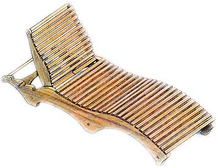
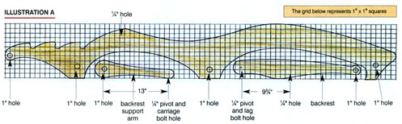
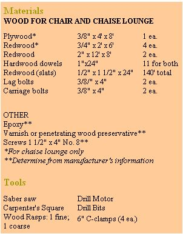
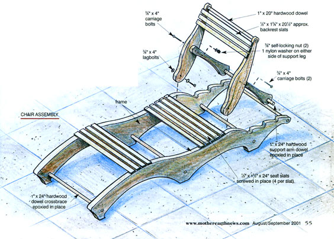
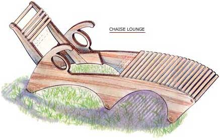
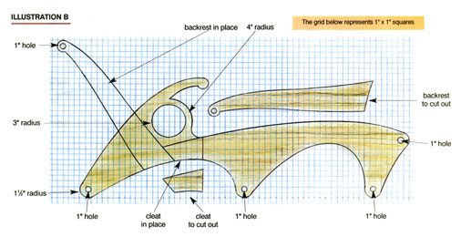
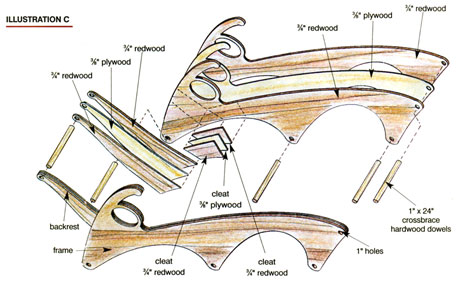

Build Your Own Retro Patio Furniture
Lean back and relax this summer in a stylish wooden lawn chair or retro chaise lounge.
By Will Shelton
August/September 2001
Retro patio furniture never goes out of style. "Retro," in this case, is a term applied to contemporary items that incorporate design elements from the 1930s through the '60s, before design took a turn toward cinder stone architecture and avocado appliances. Like malt shops and sock hops, retro is pure Americana. The wooden lawn chair and retro chaise lounge featured in this article are heavily influenced by 1960's design concepts. They are fun, functional, and easy to build. So, what are you waiting for? Who knows? Maybe Elvis will come for a visit. Get out your saber saw and crank up the rock 'n' roll, but don't get any sawdust on your blue suede shoes.
The materials list is in the Image Gallery. Although redwood is specified, cedar is also a good option.
You can also download PDFs of the plans: Wooden Lawn Chair Plans, Wooden Lawn Chair and Chaise Lounge Plans 1 (Illustrations A and B) and Chaise Lounge Plans 2 (Illustration C).
Retro Wooden Lawn Chair
The Frame
- Create a 1-inch-by-1-inch grid pattern on one of the 8-foot redwood 2-by-12s. Recreate the curves full scale on the board using Illustration A as a guide.
- Cut out the shape using a saber saw.
- Use the cut-out shape as a template and trace the shape on the remaining 8-foot 2-by-12 and cut it out.
- Clamp the two frame pieces together and refine the curves with a wood rasp to make both sides identical. (Note: A good wood rasp is well worth the price. Choose one that has a rough and fine tooth flat on one side and a rough and fine convex tooth on the other.)
- With the two sides still clamped together, drill all the holes, making sure that they're perpendicular to the surface.
- Sand the redwood to a desired smoothness.
Joining the Frame Pieces
- Cut four 1-inch hardwood dowels to exactly 24 inches. These are the cross-brace dowels.
- Cut all of the seat slats to 24 inches long. You will need 20 to 24 slats depending on your spacing.
- Coming in 1 inch from each side, drill and countersink the two mounting holes in each slat end.
- Sand the top edges to a quarter-inch radius.
- Use eight of the slats to evenly space the frame pieces (four on top, four on the bottom). Temporarily screw them in place.
- With the frame pieces now spaced exactly 24 inches apart and parallel to each other, epoxy the four cross-brace dowels in place. (See Chair Assembly Illustration )
- After the epoxy has cured, screw on all of the seat slats. Use one of the slats for a spacer.
The Backrest
- Cut out the four backrest pieces from the boards traced using Illustration A. Make the contours match just as you did the frame pieces.
- Measure the distance between the frame pieces.
- Cut 10 to 12 backrest slat pieces to the dimension just taken but make them an eighth inch shorter: The backrest sides must fit inside the frame pieces. Drill, countersink the mounting holes, and sand the quarter-inch radius just as you did the seat slats.
- Drill all of the holes for both lag bolts and hardwood dowel.
- Screw all of the backrest slats in place (10 to 12 required).
- Attach the backrest support arms to the backrest using carriage bolts.
- Install the backrest using lag bolts.
- Epoxy the support arm dowel. Ensure the spacing is consistent.
Applying a Finish
- To preserve the wood, brush on a quality varnish or penetrating wood preservative.
- Stand the feet in a tray containing a penetrating epoxy until sufficient liquid has been absorbed by the wood. This will keep the most vulnerable part of the wood from rotting.
Retro Chaise Lounge
- Create a 1-inch-by-1-inch grid pattern on a sheet of three-eighths-inch plywood.
- Recreate the curves full scale on the grid using Illustration B as a guide.
- Cut out the shape using a saber saw.
- Use the cut-out shapes as templates and trace the outlines on one more sheet of three-eighths-inch plywood and four sheets of three-quarter-inch redwood. Drill an eighth-inch pilot hole in all of the dowel holes on all of the pieces. Construct the left and right frames by gluing all of the pieces together using epoxy. Put eighth-inch dowels through the pilot holes to line up the pieces (see Illustration C).
- After the epoxy has cured, clamp the two frames together and refine all the curves making both sides identical.
- Drill all of the dowel holes with the frames clamped together using a 1-inch spade bit or hole saw.
- Sand smooth where necessary.
- Epoxy and screw the backrest and cleats into position on their frames.
- Cut five each 1-inch hardwood dowels to an exact length of 24 inches for the cross-braces.
- Cut 20 seat slats to a length of 24 inches. Cut four to a length of 22 inches. Cut 15 slats for the backrest 22 inches long.
- Drill and countersink two holes in each end.
- Sand the top edge to a quarter-inch radius. Screw the four 22-inch cleat seat slats in place. This will provide a resting place for the slats.
- Screw the top two backrest slats in place.
- Screw the last two seat slats in place.
- Epoxy all of the dowels in place ensuring that the frames are exactly parallel.
- After the epoxy has cured, screw on all of the remaining slats.

Will Shelton
The assembled wooden lawn chair. The back is adjustable for sitting or reclining.
|

Will Shelton
Use this template as a guide for cutting the sides and backrest supports of the wooden lawn chair. Each square on the template represents a 1-inch-by-1-inch square.
|

Will Shelton
If redwood is too expensive or unavailable, you can use cedar.
|

Will Shelton
Details of how the wooden lawn chair is assembled.
|

Will Shelton
The arms on the frame interfere with the slats for the seat of the retro chaise lounge. Cleats hold these slats in place.
|

Will Shelton
Use this template for cutting the frame of the retro chaise lounge. Each square on the template represents a 1-inch-by-1-inch square.
|

Will Shelton
The frame of the retro chaise lounge is made by laminating three pieces of plywood with epoxy.
|
|
|